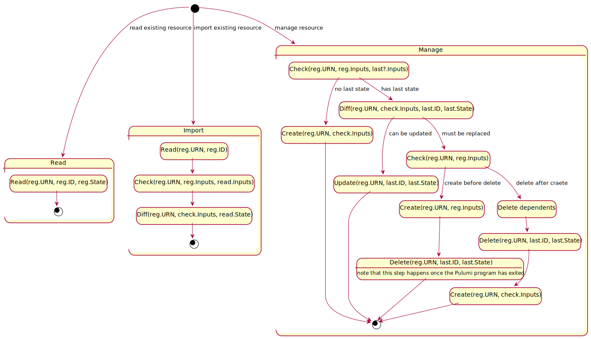

Resource Provider Implementer’s Guide#
Provider Programming Model#
Resources#
The core functionality of a resource provider is the management of custom resources and construction of component resources within the scope of a Pulumi stack. Custom resources have a well-defined lifecycle built around the differences between their actual state and the desired state described by their inputs and implemented using create, read, update, and delete (CRUD) operations defined by the provider. Component resources have no associated lifecycle, and are constructed by registering child custom or component resources with the Pulumi engine.
URNs#
Each resource registered with the Pulumi engine is logically identified by its
uniform resource name (URN). A resource’s URN is derived from the its type, parent type,
and user-supplied name. Within the scope of a resource-related provider method
(Check, Diff, Create, Read,
Update, Delete, and Construct), the type of
the resource can be extracted from the provided URN. The structure of a URN is defined
by the grammar below.
urn = "urn:pulumi:" stack "::" project "::" qualified type name "::" name ;
stack = string ;
project = string ;
name = string ;
string = (* any sequence of unicode code points that does not contain "::" *) ;
qualified type name = [ parent type "$" ] type ;
parent type = type ;
type = package ":" [ module ":" ] type name ;
package = identifier ;
module = identifier ;
type name = identifier ;
identifier = unicode letter { unicode letter | unicode digit | "_" } ;
Custom Resources#
In addition to its URN, each custom resource has an associated ID. This ID is opaque to the Pulumi engine, and is only meaningful to the provider as a means to identify a physical resource. The ID must be a string. The empty ID indicates that a resource’s ID is not known because it has not yet been created. Critically, a custom resource has a well-defined lifecycle within the scope of a Pulumi stack.
Component Resources#
A component resource is a logical container for other resources. Besides its URN, a
component resource has a set of inputs, a set of outputs, and a tree of children. Its
only lifecycle semantics are those of its children; its inputs and outputs are not
related in the same way a custom resource’s inputs and state are
related. The engine can call a resource provider’s Construct method to
request that the provider create a component resource of a particular type.
Functions#
A provider function is a function implemented by a provider, and has access to any of the provider’s state. Each function has a unique token, optionally accepts an input object, and optionally produces an output object. The data passed to and returned from a function must not be unknown or secret, and must not refer to resources. Note that an exception to these rules is made for component resource methods, which may accept values of any type, and are provided with a connection to the Pulumi engine.
Data Exchange Types#
The values exchanged between Pulumi resource providers and the Pulumi engine are a superset of the values expressible in JSON.
Pulumi supports the following data types:
Null, which represents the lack of a valueBool, which represents a boolean valueNumber, which represents an IEEE-754 double-precision numberString, which represents a sequence of UTF-8 encoded unicode code pointsArray, which represents a numbered sequence of valuesObject, which represents an unordered map from strings to valuesAsset, which represents a blobArchive, which represents a map from strings toAssets orArchivesResourceReference, which represents a reference to a Pulumi resourceUnknown, which represents a value whose type and concrete value are not knownSecret, which demarcates a value whose contents are sensitive
Assets and Archives#
An Asset or Archive may contain either literal data or a reference to a file or URL.
In the former case, the literal data is a textual string or a map from strings to Assets
or Archives, respectively. In the latter case, the referenced file or URL is an opaque
blob or a TAR, gzipped TAR, or ZIP archive, respectively.
Each Asset or Archive also carries the SHA-256 hash of its contents. This hash can be
used to uniquely identify the asset (e.g. for locally caching Asset or Archive
contents).
Resource References#
A ResourceReference represents a reference to a Pulumi resource. Although
all that is necessary to uniquely identify a resource is its URN, a ResourceReference
also carries the resource’s ID (if it is a custom resource) and the
version of the provider that manages the resource. If the contents of the referenced
resource must be inspected, the reference must be resolved by invoking the getResource
function of the engine’s builtin provider. Note that this is only possible if there is a
connection to the engine’s resource monitor, e.g. within the scope of a call to Construct.
This implies that resource references may not be resolved within calls to other
provider methods. Therefore, configuration values, custom resources and provider functions
should not rely on the ability to resolve resource references, and should instead treat
resource references as either their ID (if present) or URN. If the ID is present and
empty, it should be treated as an Unknown.
Unknowns#
An Unknown represents a value whose type and concrete value are not known. Resources
typically produce these values during previews for properties with values
that cannot be determined until the resource is actually created or updated.
Functions must not accept or return unknown values.
Secrets#
A Secret represents a value whose contents are sensitive. Values of this type are
merely wrappers around the sensitive value. A provider should take care not to leak a
secret value, and should wrap any resource output values that are always sensitive in a
Secret. Functions must not accept or return secret values.
Property Paths#
TODO: write this up
Schema#
Each provider constitutes the implementation of a single Pulumi package. Each Pulumi package has an associated schema that describes the package’s configuration, resources, functions, and data types. The schema is primarily used to facilitate programmatic generation of per-language SDKs for the Pulumi package, but is also used for importing resources, program code generation, and more. Schemas may be expressed using JSON or YAML, and must validate against the metaschema.
Provider Lifecycle#
Clients of a provider (e.g. the Pulumi CLI) must obey the provider lifecycle. This lifecycle guarantees that a provider is configured before any resource operations are performed or provider functions are invoked. The lifecycle of a provider instance is described in brief below.
The user looks up the factory for a particular
(package, semver)tuple and uses the factory to create a provider instance.The user configures the provider instance with a particular configuration object.
The user performs resource operations and/or calls provider functions with the provider instance.
The user shuts down the provider instance.
Within the scope of a Pulumi stack, each provider instance has a corresponding provider
resource. Provider resources are custom resources that are managed by the Pulumi engine,
and obey the usual custom resource lifecycle. The Check
and Diff methods for a provider resource are implemented using the
CheckConfig and DiffConfig methods of the resource’s
provider instance. The latter is critically important to the user experience: if
DiffConfig indicates that the provider resource must be replaced, all of
the custom resources managed by the provider resource will also be replaced. Thus,
DiffConfig should only indicate that replacement is required if the provider’s
new configuration prevents it from managing resources associated with its old
configuration.
Lookup#
Before a provider can be used, it must be instantiated. Instantiating a provider requires
a (package, semver) tuple, which is used to find an appropriate provider factory. The
lookup process proceeds as follows:
Let the best available factory
Bbe emptyFor each available provider factory
Fwith package namepackage:If the
F’s version is compatible withsemver:If
Bis empty or ifF’s version is newer thanB’s version, setBtoF
If
Bis empty, no compatible factory is available, and lookup fails
Within the context of the Pulumi CLI, the list of available factories is the list of
installed resource plugins plus the builtin pulumi provider. The list of installed
resource plugins can be viewed by running pulumi plugin ls.
Once an appropriate factory has been found, it is used to construct a provider instance.
Configuration#
A provider may accept a set of configuration variables. After a provider is instantiated, the instance must be configured before it may be used, even if its set of configuration variables is empty. Configuration variables may be of any type. Because it has no connection to the Pulumi engine during configuration, a provider’s configuration variables should not rely on the ability to resolve resource references.
In general, a provider’s configuration variables define the set of resources it is able
to manage: for example, the aws provider accepts the AWS region to use as a
configuration variable, which prevents a particular instance of the provider from
managing AWS resources in other regions. As noted in the overview,
changes to a provider’s configuration that prevent the provider from managing resources
that were created with its old configuration should require that those resources are
destroyed and recreated.
Provider configuration is performed in at most three steps:
CheckConfig, which validates configuration values and applies defaults computed by the provider. This step is only required when configuring a provider using user-supplied values, and can be skipped when using values that were previously processed byCheckConfig.DiffConfig, which indicates whether or not the new configuration can be used to manage resources created with the old configuration. Note that this step is only applicable within contexts where new and old configuration exist (e.g. during a preview or update of a Pulumi stack).Configure, which applies the inputs validated byCheckConfig.
CheckConfig#
CheckConfig implements the semantics of a custom resource’s Check method,
with provider configuration in the place of resource inputs. Each call to CheckConfig is
provided with the provider’s prior checked configuration (if any) and the configuration
supplied by the user. The provider may reject configuration values that do not conform to
the provider’s schema, and may apply default values that are not statically computable.
The type of a computed default value for a property should agree with the property’s
schema.
DiffConfig#
DiffConfig implements the semantics of a custom resource’s Diff method,
with provider configuration in the place of resource inputs and state. Each call to
DiffConfig is provided with the provider’s prior and current configuration. If there
are any changes to the provider’s configuration, those changes should be reflected in the
result of DiffConfig. If there are changes to the configuration that make the provider
unable to manage resources created using the prior configuration (e.g. changing an AWS
provider instance’s region), DiffConfig should indicate that the provider must be
replaced. Because replacing a provider will require that all of the resources with
which it is associated are also replaced, replacement semantics should be reserved
for changes to configuration properties that are guaranteed to make old resources
unmanagable (e.g. a change to an AWS access key should not require replacement, as the
set of resources accessible via an access key is easily knowable).
Configure#
Configure applies a set of checked configuration values to a provider instance. Within
a call to Configure, a provider instance should use its configuration values to create
appropriate SDK instances, check connectivity, etc. If configuration fails, the provider
should return an error.
Parameters#
Results#
None.
Shutdown#
Once a client has finished using a resource provider, it must shut the provider down.
A client requests that a provider shut down gracefully by calling its SignalCancellation
method. In response to this method, a provider should cancel all outstanding resource
operations and function calls. After calling SignalCancellation, the client calls
Close to inform the provider that it should release any resources it holds.
SignalCancellation is advisory and non-blocking; it is up to the client to decide how
long to wait after calling SignalCancellation to call Close. Typically, a provider should
check for the cancellation signal while polling for completion of an operation. If cancelling
while waiting for a create operation to be completed, then a “partial state” should be
returned in the error to include the provider-created id.
Custom Resource Lifecycle#
A custom resource has a well-defined lifecycle within the scope of a Pulumi stack. When a custom resource is registered by a Pulumi program, the Pulumi engine first determines whether the resource is being read, imported, or managed. Each of these operations involves a different interaction with the resource’s provider.
If the resource is being read, the engine calls the resource’s provider’s Read method
to fetch the resource’s current state. This call to Read includes the resource’s ID and
any state provided by the user that may be necessary to read the resource.
If the resource is being imported, the engine first calls the provider’s Read method
to fetch the resource’s current state and inputs. This call to Read only includes the
ID of the resource to import; that is, any importable resource must be identifiable using
its ID alone. If the Read succeeds, the engine calls the provider’s Check method with
the inputs returned by Read and the inputs supplied by the user. If any of the inputs
are invalid, the import fails. Finally, the engine calls the provider’s Diff method with
the inputs returned by Check and the state returned by Read. If the call to Diff
indicates that there is no difference between the desired state described by the inputs
and the actual state, the import succeeds. Otherwise, the import fails.
If the resource is being managed, the engine first looks up the last registered inputs and
last refreshed state for the resource’s URN. The engine then calls the resource’s
provider’s Check method with the last registered inputs (if any) and the inputs supplied
by the user. If any of the inputs are invalid, the registration fails. Otherwise, the
engine decides which operations to perform on the resource based on the difference between
the desired state described by its inputs and its actual state. If the resource does not
exist (i.e. there is no last refereshed state for its URN), the engine calls the
provider’s Create method, which returns the ID and state of the created resource. If the
resource does exist, the action taken depends on the differences (if any) between the
desired and actual state of the resource.
If the resource does exist, the engine calls the provider’s Diff method with the
inputs returned from Check, the resource’s ID, and the resource’s last refreshed state.
If the result of the call indicates that there is no difference between the desired and
actual state, no operation is necessary. Otherwise, the resource is either updated (if
Diff does not indicate that the resource must be replaced) or replaced (if Diff does
indicate that the resource must be replaced).
To update a resource, the engine calls the provider’s Update method with the inputs
returned from Check, the resource’s ID, and its last refreshed state. Update returns
the new state of the resource. The resource’s ID may not be changed by a call to Update.
To replace a resource, the engine first calls Check with an empty set of prior inputs
and the inputs supplied with the resource’s registration. If Check fails, the resource
is not replaced. Otherwise, the inputs returned by this call to Check will be used to
create the replacement resource. Next, the engine inspects the resource options supplied
with the resource’s registration and result of the call to Diff to determine whether
the replacement can be created before the original resource is deleted. This order of
operations is preferred when possible to avoid downtime due to the lag between the
deletion of the current resource and creation of its replacement. If the replacement may
be created before the original is deleted, the engine calls the provider’s Create method
with the re-checked inputs, then later calls Delete with the resource’s ID and original
state. If the resource must be deleted before its replacement can be created, the engine
first deletes the transitive closure of resource that depend on the resource being
replaced. Once these deletes have completed, the engine deletes the original resource by
calling the provider’s Delete method with the resource’s ID and original state. Finally,
the engine creates the replacement resource by calling Create with the re-checked
inputs.
If a managed resource registered by a Pulumi program is not re-registered by the next
successful execution of a Pulumi program in the resource’s stack, the engine deletes the
resource by calling the resource’s provider’s Delete method with the resource’s ID and
last refereshed state.
The diagram below summarizes the custom resource lifecycle. Detailed descriptions of each resource operation follow.

Lifecycle Methods#
Check#
The Check method is responsible for validating the inputs to a resource. It may
optionally apply default values for unspecified input properties that cannot reasonably
be computed outside the provider (e.g. because they require access to the provider’s
internal data structures).
Parameters#
urn: the URN of the resource.olds: the last recorded inputObjectfor the resource, if any. If present, these inputs must have been generated by a prior call toCheckorRead. These inputs will never containUnknowns.news: the new inputObjectfor the resource. These inputs may have been provided by the user or generated by a call toRead, and may containUnknowns.
Results#
inputs: the checked inputObjectfor the resource with default values applied. The types of the properties ininputsshould agree with the types of the resource’s input properties as described in its (schema)[#schema]. IfnewscontainsUnknowns,inputsmay containUnknowns.failures: any validation failures present in the inputs. These failures should be constrained to type and range mismatches. A failure is a tuple of a property path and a failure reason.
Resource Options Interactions#
ignoreChanges#
Note that if the user specifies the
ignoreChanges resource
option, the value of news passed to Check may differ from the originals written in the
program source or returned by Read. It will be pre-processed by replacing every
ignoreChanges property by a matching value from the old inputs stored in the state.
Diff#
The Diff method is responsible for calculating the differences between the actual and
desired state of a resource as represented by its last recorded state and new input
Object as returned from Check or Read and the logical
operation necessary to reconcile the two (i.e. no operation, an Update, or a Replace`).
Parameters#
urn: the URN of the resource.id: the ID of the resource.olds: the last recorded stateObjectfor the resource. ThisObjectmust have been generated by a call toCreate,Read, orUpdate, and will never containUnknowns.news: the current inputObjectfor the resource as returned byCheckorRead. This value may containUnknowns.ignoreChanges: the set of property paths to treat as unchanged.
Results#
detailedDiff: the detailed diff between the resource’s actual and desired state.deleteBeforeReplace: if true, the resource must be deleted before it is recreated. This flag is ignored ifdetailedDiffdoes not indicate that the resource needs to be replaced.changes: an enumeration that indicates whether the provider detected any changes, detected no changes, or does not support detailed diff detection. Providers should returnSomefor this value if there are any entries indetailedDiff; otherwise they should returnNoneto indicate no difference. If a provider returnsUnknownfor this value, it is the responsibility of the client to determine whether or not differences exist by comparing the resource’s last recorded inputs with its current inputs.
In addition, the following properties should be returned for compatibility with older clients:
replaceKeys: the list of top-level input property names with changes that require that the resource be replaced.stableKeys: the list of top-level input property names that did not change and top-level output properties that are guaranteed not to change.changedKeys: the list of top-level input property names that changed.
If a provider is unable to compute a diff because its configuration contained
Unknowns, it can return an error that indicates as such. The client should
conservatively assume that the resource must be updated and warn the user.
Detailed Diffs#
A detailed diff is a map from property paths to change kinds that describes the differences between the actual and desired state of a resource and the operations necessary to reconcile the two.
Each entry in a detailed diff has a change kind that describes how the value of and input property differs, whether or not the difference requires replacement, and which old value was used for determining the difference. The core change kinds are:
Add, which denotes anObjectproperty orArrayelement that was addedUpdate, which denotes anObjectproperty orArrayelement that was updatedDelete, which denotes anObjectproperty orArrayelement that was removed
Each of these core kinds is paramaterized on whether or not the change requires
replacement and whether the old value of the property should was read from the
resource’s old input Object or old state Object.
TODO: the input/output flag is a bit clumsy, as it is the only part of the system
that implies some correspondence between input and output Object schemas. It was
chosen over an approach that used old/new values due in order to remove the possibility
of a provider accidentally revealing a secret value as part of a diff. We should
reconsider this approach if we can find an easy way to maintain secretness.
Create#
The Create method is responsible for creating a new instance of a resource from an
input Object and returning the resource’s state Object. Create may be called during
a preview in order to compute a hypothetical state Object without actually
creating the resource, in which case the preview argument will be true.
Parameters#
urn: the URN of the resource.news: the inputObjectfor the resource. This value must have been generated by a prior call toCheck. Ifpreviewis true, this value may containUnknownvalue; otherwise, it is guaranteed to be fully-known.timeout: the timeout for the create operation. If this value is0, the provider should apply the default creation timeout for the resource.preview: if true, the provider should calculate the stateObjectas accurately as it is able without actually creating the resource. Top-level properties that are present in the resource’s schema but are omitted from its stateObjectshould be treated as having the valueUnknown. Nested properties with values that are not computable must be explicitly set toUnknown. If it is not possible to guarantee that the value produced by a preview will match the value that would be produced by actually creating the resource, the value should be left unknown.
Results#
id: the ID for the created resource. Ifpreviewis true, this value will be ignored.state: the new stateObjectfor the resource. Ifpreviewis true, this value may containUnknowns.
Update#
The Update method is responsible for updating a resource in-place in order given its
last recorded state Object and current input Object. Update may be called during
a preview in order to compute a hypothetical state Object without actually
updating the resource, in which case the preview argument will be true.
Parameters#
urn: the URN of the resource.id: the ID of the resource.olds: the last recorded stateObjectfor the resource. ThisObjectmust have been generated by a call toCreate,Read, orUpdate.news: the inputObjectfor the resource. This value must have been generated by a prior call toCheck. Ifpreviewis true, this value may containUnknownvalue; otherwise, it is guaranteed to be fully-known.timeout: the timeout for the update operation. If this value is0, the provider should apply the default update timeout for the resource.ignoreChanges: the set of property paths to treat as unchanged.preview: if true, the provider should calculate the stateObjectas accurately as it is able without actually updating the resource. Top-level properties that are present in the resource’s schema but are omitted from its stateObjectshould be treated as having the valueUnknown. Nested properties with values that are not computable must be explicitly set toUnknown. If it is not possible to guarantee that the value produced by a preview will match the value that would be produced by actually updating the resource, the value should be left unknown.
Results#
state: the new stateObjectfor the resource. Ifpreviewis true, this value may containUnknowns.
Read#
The Read method is responsible for reading the current inputs and state Objects for a
resource. Read may be called during a refresh or import of a
managed resource or during a preview or update for an external
resource.
Parameters#
urn: the URN of the resource.id: the ID of the resource.inputs: the last recoded inputObjectfor the resource, if any. If present, thisObjectmust have been generated by a call toCheckorRead. This parameter is omitted if the resource is being imported.state: the last recorded stateObjectfor the resource, if any. ThisObjectmust have been generated by a call toCreate,Read, orUpdate. This property is only present during a refresh, and must not be required for a resource to support importing.
Results#
newInputs: the new inputObjectfor the resource. If the provider does not support detailed diffs, these inputs may be used by the engine to determine whether or not the resource’s actual state differs from its desired state during the next preview or update. The shape of the returnedObjectshould be compatible with the resource’s schema. If the resource is being imported, an inputObjectmust be returned. Otherwise, unless the inputObjectis used for computing default property values or the provider does not support detailed diffs,newInputsshould simply reflect the value ofinputs.newState: the new stateObjectfor the resource.
Delete#
The Delete method is responsible for deleting a resource given its ID and state
Object.
Parameters#
urn: the URN of the resource.id: the ID of the resource.state: the last recorded stateObjectfor the resource. ThisObjectmust have been generated by a call toCreate,Read, orUpdate.timeout: the timeout for the delete operation. If this value is0, the provider should apply the default deletion timeout for the resource.
Results#
None.
Component Resource Lifecycle#
TODO: user-level programming model
Construct#
TODO: brief, parameters, results, etc.
Provider Functions#
Invoke#
TODO
StreamInvoke#
TODO
CLI Scenarios#
TODO:
preview
update
import
refresh
destroy
Preview#
TODO:
check
diff
create/update preview, read operation
Update#
TODO:
check
diff
create/update/read/delete operation
Import#
TODO: read operation
Refresh#
TODO: read operations
Destroy#
TODO: delete operation
Appendix#
Out-of-Process Plugin Lifecycle#
gRPC Interface#
TODO:
feature negotiation
data representation